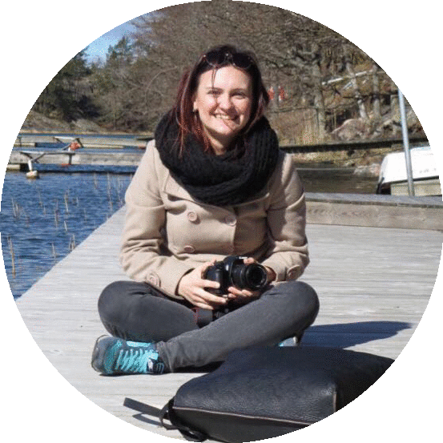

Life as Content Creator
About me
Since I was young I've always been interested in languages. That is why I chose to study languages at Albert-Ludwigs-Universität in Germany. I specialised in scandinavian linguistics and literature and since I was able to move to Sweden in 2014 a Scandinavian scholars dream came true. I could live my life in the country of all the authors I've always admired: Strindberg, Selma Lagerlöf, Jonas Hassen Khemiri.
Content Creation
I started to work as a Content Creator for Mobile Games in 2014. I was hired for the popular game QuizClash and since then took care of the German and Italian version. My work consists in many different tasks that go from actual Content Creation with the quiz questions, to UI translation and Social Media work. A big part of my job consists in creating content for our games. This can be normal quiz questions for the QuizClash database, Monthly quizzes or Special quizzes about different topics. Our last Special quiz was an "Art-Quiz" for example.
UI Translation
Another part of my job are UI Translations. Good UI Translations give the game a localized feel and help the player to build familiarity with the game. If a game has good UI translations a player more likely will come back and play again.